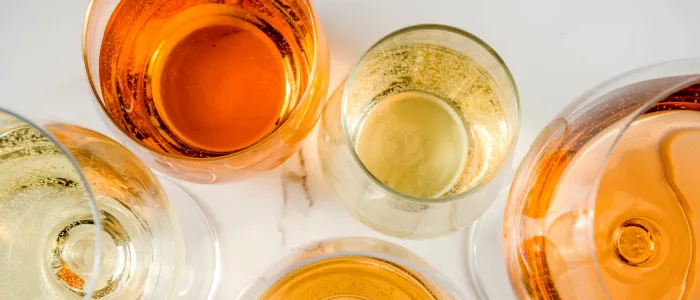
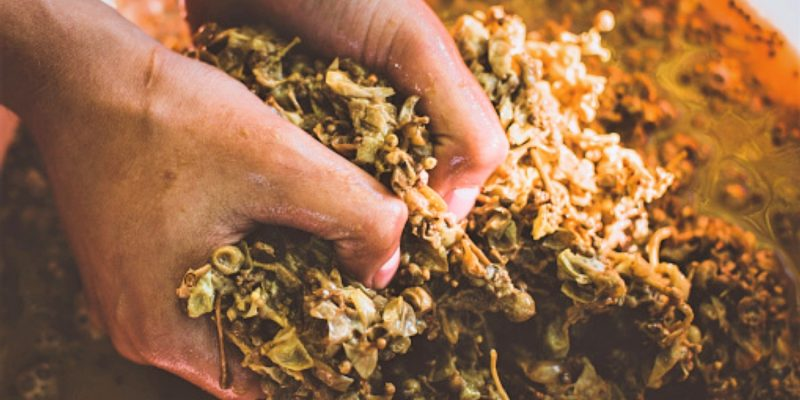
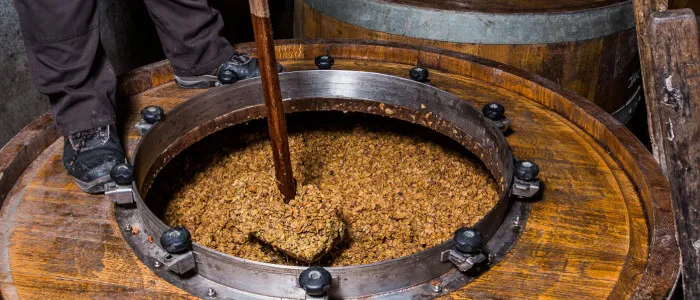
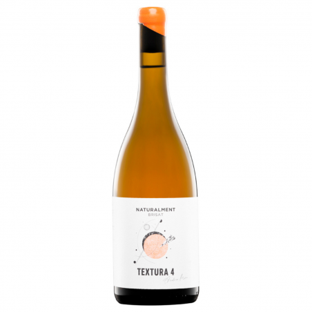
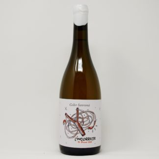
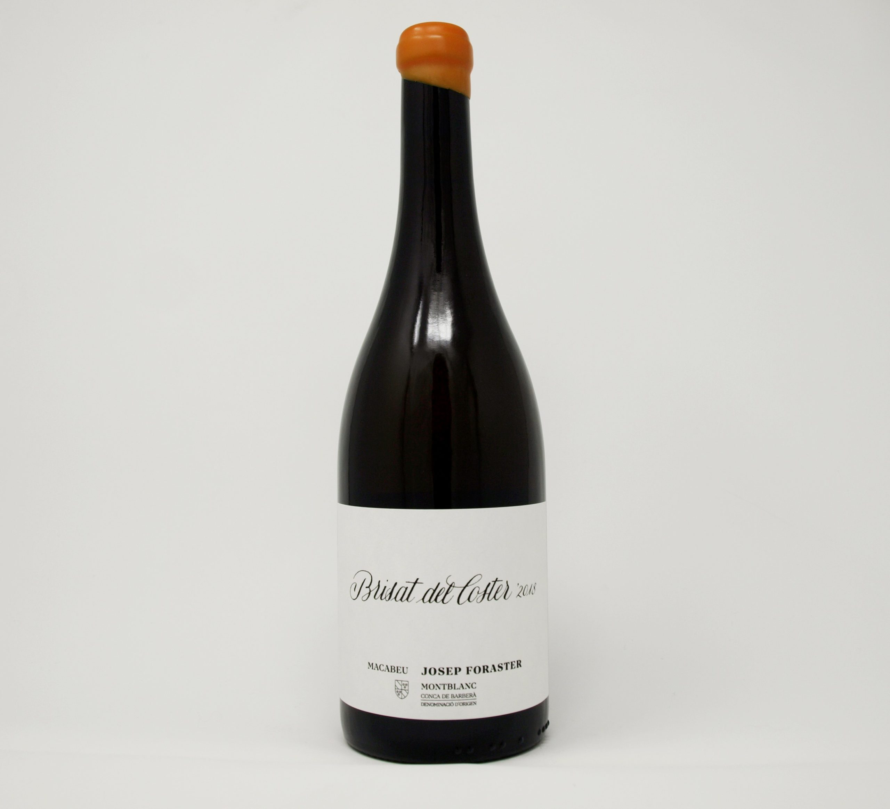

Blancos que se vinifican como tintos
Cuando escuchas orange wine en una conversación de sumilleres, o lo ves en la carta de un restaurante de moda, puede sonar a novedad. A tendencia importada. A algo que acaba de inventarse en algún loft de Berlín o en una bodega de Portland. No es así.
Els vins brisats —que és el seu nom en català, i el terme correcte en el context vitivinícola de la nostra terra— són vins blancs elaborats exactament igual que els negres: el most fermenta en contacte amb les pells del propi raïm.
El resultado es un vino que ya no es del todo blanco, pero tampoco es tinto. Tiene color ámbar o anaranjado, textura en boca, taninos propios de una maceración, aromas más complejos y una capacidad de maridaje que lo sitúa en tierra de nadie —en el buen sentido.

El color lo dice todo: ámbar, dorado intenso, a veces casi anaranjado. No es un blanco. No es un tinto. Es otra cosa.Seis mil años de tradición. Y en Tarragona, también
La maceración de uvas blancas con sus pieles no es una técnica nueva. Hay evidencias arqueológicas de esta práctica que se remontan a 6.000 años atrás, en la región de Georgia —el país caucásico—, donde todavía hoy se elaboran vinos en tinajas de barro enterradas llamadas kvevri, siguiendo métodos prácticamente idénticos a los de la antigüedad.
Pero no hace falta ir tan lejos para encontrar raíces. En la Terra Alta —denominación de origen de la provincia de Tarragona— el vi brisat es, sencillamente, el vino de siempre. Cuando no existía la tecnología para hacer blancos limpios y frescos, toda la uva blanca —mayoritariamente garnacha blanca— se vinificaba en contacto con sus pieles. Era lo habitual. Era lo que se sabía hacer.
Con la modernización de las bodegas, y con la demanda de vinos blancos más ligeros durante las décadas de los ochenta y noventa, esta práctica fue quedando atrás. Hasta que el mundo la redescubrió con otro nombre.

La maceración en contacto con las pieles: el momento en que el blanco empieza a dejar de serlo.Cómo se hace un vino brisado
El proceso parte de uva blanca —garnacha blanca en la Terra Alta, macabeu o parellada en otras zonas del Camp de Tarragona. Una vez vendimiada, en lugar de prensar la uva inmediatamente y separar el líquido de los sólidos, el elaborador deja que el mosto fermente en contacto directo con las pieles, y a veces también con las pepitas y los raspones.
Durante esta maceración, las pieles ceden al vino todo lo que tienen: color, taninos, aromas terciarios y polifenoles que actúan como conservantes naturales. Por eso muchos brisados se elaboran sin sulfitos añadidos —las pieles ya hacen ese trabajo.
La duración de la maceración es la variable clave. Unas pocas horas dan un color apenas dorado y una textura sutil. Varios días producen un vino ámbar con estructura marcada. Semanas o meses —como en los kvevri georgianos— generan vinos de gran complejidad y una astringencia que no todo el mundo espera encontrar en un blanco. El brisat no es una receta. Es una filosofía de trabajo.

La maceración en tina: el tiempo de contacto entre el mosto y las pieles define el carácter final del vino.Qué encontrarás cuando lo bebas
El primer impacto es visual: ese color dorado intenso, ámbar, a veces casi anaranjado, que lo delata de inmediato. En nariz, aparecen aromas que no encontrarás en un blanco convencional: frutos secos, miel, piel de naranja, especias, notas oxidativas leves que no son defecto sino carácter. En boca, la textura es más densa, hay estructura tánica discreta pero presente, y un final largo con cierta amargura que resulta muy grata con la comida.
Son vinos que piden temperatura de servicio entre 12 y 14 grados —como un tinto joven ligero— y copa amplia, no flauta. Y son, ante todo, vinos profundamente gastronómicos: escabeches, conservas, quesos curados, arroces melosos, setas, patés, carnes blancas asadas o embutidos de calidad. La palabra que más se repite entre quienes los descubren es siempre la misma: sorpresa.
Tarragona: cuna, no moda
Mientras el mundo habla de orange wines como si fueran una invención reciente, en la Terra Alta llevan siglos mirando con cierta sonrisa. La Denominación de Origen Terra Alta fue la primera DO de Cataluña en regular oficialmente la elaboración de vinos brisados, incorporándolos a su pliego de condiciones. Un reconocimiento explícito a que esto no es novedad: es identidad.
Más de quince bodegas de la DO Terra Alta tienen al menos una referencia brisada en su catálogo. La uva protagonista es la garnacha blanca, variedad con la que la Terra Alta produce un tercio de la producción mundial. Piel gruesa, gran capacidad de ceder color y estructura durante la maceración: idónea para esta elaboración.
El Alt Camp, la Conca de Barberà y otras denominaciones de la provincia incorporan esta técnica con resultados notables. Elaboradores como Cellers Sanromà (Vila-rodona), Bàrbara Forés (Terra Alta) o Josep Foraster (Montblanc) demuestran que el territorio tiene mucho que decir en este capítulo de la enología mundial. Los Gourmets de Tarragona lo hemos encontrado en nuestras mesas. Y sabemos que hay mucho más por descubrir.
Algunos que lo hacen aquí
Una selección —no exhaustiva— de elaboradores de la demarcación que trabajan el vi brisat con proceso documentado y vino en el mercado.

Una misma técnica, muchos caracteres distintos. Cada brisat es el resultado de una decisión: cuánto tiempo, qué variedad, qué suelo.Bàrbara Forés
D.O. Terra Alta · Gandesa
Abrisa't · Garnatxa BlancaUna de las referencias más reconocidas del brisat en la Terra Alta. Garnatxa blanca macerada con sus pieles, color ámbar intens, fruta blanca en nariz y una rusticidad en boca muy típica de la comarca. El brisat de tota la vida con nombre en el mercado internacional.
Cellers Sanromà
Alt Camp · Vila-rodona
L'Incorrecte · ParelladaEduard Sanromà, cuarta generación de una familia de viticultores de Vila-rodona, elabora L'Incorrecte con parellada brisada. El nombre lo dice todo: en un mundo que quería blancos limpios y frescos, hacer esto era ir a contracorriente. «Si no té sortida, el provarem cada diumenge a casa», decía. Tiene salida.
Josep Foraster
D.O. Conca de Barberà · Montblanc
Brisat del Coster · MacabeuMacabeu brisado de la Conca de Barberà, maceración larga en contacto con pieles. Color ámbar profundo, tapón de cera naranja que anuncia el contenido. Un celler que demuestra que el brisat no es exclusivo de la Terra Alta: toda la provincia tiene el terreno y la historia.
Celler Jordi Miró
D.O. Terra Alta
Naturalment Brisat · Textura 4La línea Naturalment de Jordi Miró explora el brisat con garnatxa blanca de la Terra Alta buscando el equilibrio entre la estructura que dan las pieles y la frescura que da la comarca. Uno de los brisados más gastronómicos del territorio.

L'Incorrecte
La parellada no era una uva para brisar. Eso decían. Eduard Sanromà decidió que, si total nadie miraba, valía la pena intentarlo. El resultado es un vino que lleva el nombre de lo que era: incorrecto. Y que funciona exactamente por eso.

Brisat del Coster
El tapón de cera naranja ya te avisa de qué vas a encontrar dentro. Macabeu de la Conca, maceración larga, color profundo. Un brisat que demuestra que esta técnica tiene historia en toda la provincia, no solo en la Terra Alta.
Por qué nos importa
En la Associació Gourmets de Tarragona llevamos décadas visitando restaurantes, evaluando menús y debatiendo sobre lo que ponemos en la mesa. Los vinos brisados han ido apareciendo en nuestras veladas —a veces como propuesta del sumiller, a veces como descubrimiento personal— con una constancia que ya no es casualidad.
Son vinos que incomodan, en el buen sentido. Obligan a salir de los hábitos. A preguntarse qué se espera de un blanco, y por qué. A entender que las categorías del vino son orientaciones, no prisiones. Y son vinos de aquí. De este territorio que cultivamos, que visitamos, que amamos.
Que el mundo los descubra con otro nombre no nos molesta. Nos alegra que lleguen. Porque nosotros ya sabíamos dónde encontrarlos.